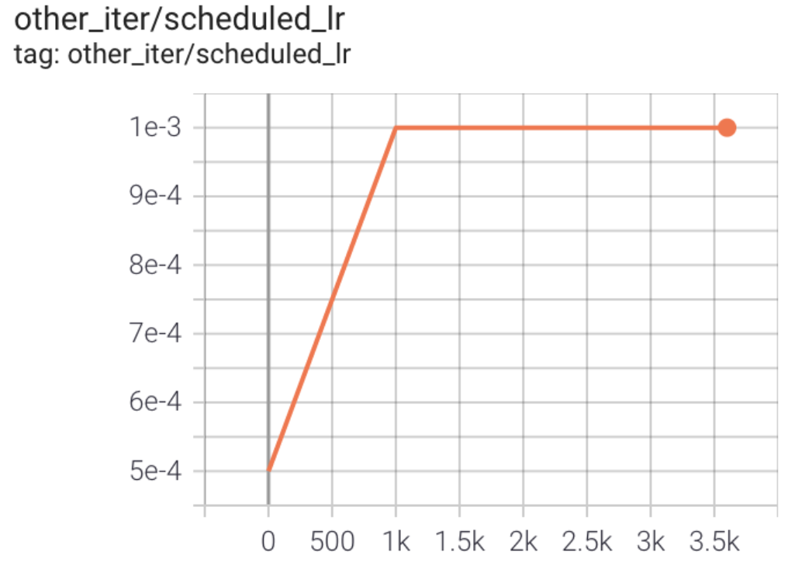

FAQ¶
Q1: Import packages warning¶
- A1
Regarding import linlink, ceph, memcache, redis related warnings displayed on the command line when running DI-engine, generally users can ignore it, and DI-engine will automatically search for corresponding alternative libraries or code implementations during import.
Q2: Cannot use DI-engine command line tool (CLI) after installation¶
- A2
pip with
-eflag might sometimes make CLI not available. Generally, non-developers do not need to install with-eflag, removing the flag and reinstall is sufficient.Part of the operating environment will install the CLI in the user directory, you need to verify whether the CLI installation directory is in the user’s environment variable (such as
$PATHin Linux).
Q3: “No permission” error occurred during installation¶
- A3
- Due to the lack of corresponding permissions in some operating environments, “Permission denied” may appear during pip installation. The specific reasons and solutions are as follows:
pip with
--userflag and install in user’s directoryMove the
.gitfolder in the root directory out, execute the pip installation command, and then move it back. For specific reasons, see https://github.com/pypa/pip/issues/4525
Q4: How to set the relevant operating parameters of SyncSubprocessEnvManager¶
- A4
Add manager field to the env field in cfg file, you can specify whether to use shared_memory as well as the context of multiprocessing launch. The following code provides a simple example. For detailed parameter information, please refer to SyncSubprocessEnvManager.
config = dict(
env=dict(
manager=dict(shared_memory=False)
)
)
Q5: How to adjust the learning rate¶
- A5
Add lr_scheduler module in the entry file.
You can adjust the learning rate by calling torch.optim.lr_scheduler (refer to https://pytorch.org/docs/stable/optim.html) and apply the scheduler.step() to update the learning rate after optimizer’s update.
The following code provides a simple example. For more detail, see demo: https://github.com/opendilab/DI-engine/commit/9cad6575e5c00036aba6419f95cdce0e7342630f.
from torch.optim.lr_scheduler import LambdaLR
...
# Set up RL Policy
policy = DDPGPolicy(cfg.policy, model=model)
# Set up lr_scheduler, the optimizer attribute will be different in different policy.
# For example, in DDPGPolicy the attribute is 'optimizer_actor', but in DQNPolicy the attribute is 'optimizer'.
lr_scheduler = LambdaLR(
policy.learn_mode.get_attribute('optimizer_actor'), lr_lambda=lambda iters: min(1.0, 0.5 + 0.5 * iters / 1000)
)
...
# Train
for i in range(cfg.policy.learn.update_per_collect):
...
learner.train(train_data, collector.envstep)
lr_scheduler.step()
The curve of learning rate is shown in the figure below
{kind=link}